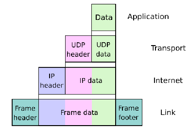
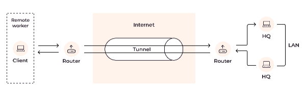

Network Security Exam Revision
Tunneling
Definition: Tunneling is the process of sending private data through a public network in a way that hides it from unauthorized access.

Q: What is tunneling?
- The process of sending private data through a public network where it could normally be visible to prying eyes.
Q: How does a private tunnel protect data on a public network?
- It “bores through” the public network to hide the contents of the data.
Q: What happens to the data before it is sent through the tunnel?
- The data is first encrypted and then encapsulated.
Q: What is encapsulation in the context of tunneling?
- Encapsulation is the process of enclosing the encrypted data with an additional header so that the data can be directed to its destination.
Q: What would happen if all data, including its header, was completely encrypted during transmission?
- Network routers would not be able to forward the packet to its destination.
Q: How is encrypted information able to travel across networks as normal?
- By encapsulating the encrypted information with unencrypted information, allowing routers to read the necessary forwarding details.
Q: What is the technique called that allows secure transport of data across a network in this way?

Key Points for Exam
- Tunneling = Securely sending private data over public networks
- Data is encrypted (for privacy) and encapsulated (for routing)
- Encapsulation adds a readable header so routers can forward the packet
- If headers were encrypted, routing would fail
- Tunneling is essential for VPNs and secure communications